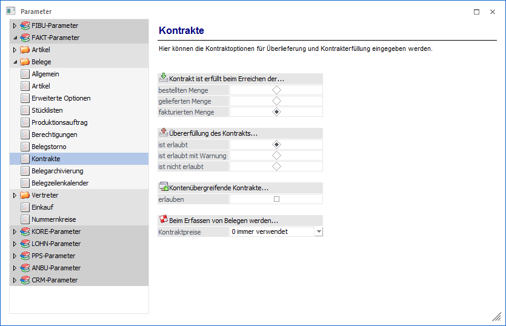
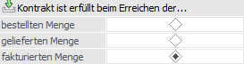
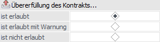
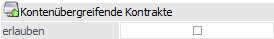
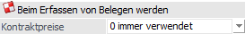

Über den Bereich "FAKT-Parameter - Belege - Kontrakte" können allgemeine Kontraktoptionen definiert werden.
Hinweis
Standardmäßig wird das Fenster in einem "Lesemodus" geöffnet, d.h. es können die bestehenden Einstellungen kontrolliert, Änderungen allerdings nicht durchgeführt werden. Hierfür muss zunächst mit Hilfe des Buttons "Bearbeiten" der "Bearbeitungsmodus" aktiviert werden. Alternativ kann diese Aktivierung auch über das Kontextmenü der rechten Maustaste (Funktion "Applikation xxx bearbeiten") erfolgen.

Kontrakt ist erfüllt beim Erreichen der…

In diesem Bereich kann festgelegt werden ab wann eine Kontraktzeile als "erfüllt" gilt. Somit wirkt sich die Einstellung direkt auf die Berechnung bzw. die IST-Mengen-Anzeige in folgenden Bereichen aus:
ü In der Tabelle "Artikelinfo" der Belegerfassung (Register "Mitte").
ü Am Ausdruck eines Kontraktes als "Abnahmemenge" im Menüpunkt "Kontrakte drucken".
ü Beim Vorschlag der "offenen Mengen" im Menüpunkt "Kontrakte abbuchen".
Hinweis
Neben der IST-Mengen-Ausweisung wird an diversen Stellen auch der sogenannte "Kontraktstatus" mit Hilfe eines Icons dargestellt.
ü - offen
Es handelt sich um eine nicht
abgeschlossene Kontraktzeile.
ü - abgeschlossen
Es handelt sich um eine
manuell oder automatisch abgeschlossene Kontraktzeile. Solche Zeilen werden bei
der Preisfindung nicht berücksichtigt, sowie im Kontrakte abbuchen nicht zur
Lieferung vorgeschlagen.
Achtung
Bei einer nachträglichen Änderung dieser Option werden alle Kontraktzeilen überprüft und aktualisiert. Eine Ausnahme bildet hierbei nur der Kontraktstatus von manuell abgeschlossene Kontraktzeilen.
Ø bestellten Menge
Wird die vereinbarte Menge, sprich Kontraktmenge, in der Stufe "2 - Auftrag" bzw. "6 - L.Bestellung" im Menüpunkt "Kontrakte abbuchen" erfasst, dann gilt die Kontraktzeile als erfüllt.
Ø gelieferten Menge
Wird die Kontraktmenge in der Stufe "3 - Lieferschein" bzw. "7 - L.Lieferschein" im Menüpunkt "Kontrakte abbuchen" erfasst, dann gilt die Kontraktzeile als erfüllt.
Ø fakturierten Menge
Wird die Kontraktmenge in der Stufe "4 - Faktura" bzw. "8 - L.Faktura" im Menüpunkt "Kontrakte abbuchen" erfasst, dann gilt die Kontraktzeile als erfüllt.
Übererfüllung des Kontrakts…

An dieser Stelle kann angegeben werden wie bei einer Überlieferung einer Kontraktmenge im Belegerfassen bzw. im Menüpunkt "Bestellvorschlag bearbeiten" verfahren werden soll.
Hinweis
Eine Übererfüllung des Kontrakts wird nur in jener Belegstufe geprüft, welche der eingestellten "Erfüllungsmenge" entspricht.
D.h. wenn als Erfüllungsmenge die Bestellmenge eingestellt ist, kann zwar kein Auftrag erfasst werden, wenn die Menge überschritten wird, es kann aber ein Lieferschein mit einer Menge größer der Sollmenge gedruckt werden!
Achtung
Bei einer nachträglichen Änderung dieser Option werden alle Kontraktzeilen überprüft und aktualisiert. Eine Ausnahme bilden hierbei nur manuell abgeschlossene Kontraktzeilen.
Ø ist erlaubt
Eine Überlieferung der Kontraktmenge kann erfolgen. Kontraktzeilen werden hierbei niemals automatisch abgeschlossen.
Ø ist erlaubt mit Warnung
Bei einer Überlieferung der Kontraktmenge erfolgt eine Warnung, wobei anschließend eine Überlieferung möglich ist. Kontraktzeilen werden hierbei niemals automatisch abgeschlossen.
Ø ist nicht erlaubt
Eine Überschreitung der Kontraktmenge ist nicht erlaubt; dazu erfolgt auch eine entsprechende Warnung.
Kontenübergreifende Kontrakte

Ø (Kontenübergreifende Kontrakte) erlauben
Mit dieser Option kann gesteuert werden, ob kontenübergreifende Kontrakte möglich sind. Die Definition, ob ein Kontrakt in weiterer Folge kontenübergreifend ist, erfolgt im Menüpunkt "Kontrakterfassung" mittels Aktivierung der Option "kontenübergreifend".
Beim Erfassen von Belegen werden

Ø Beim Erfassen von Belegen werden Kontraktpreise
Die Einstellung gilt für Verkaufs- und Einkaufsbelege im Bereich "Erfassen". Die Funktion ermöglicht eine individuelle Handhabung in Bezug auf die Kontraktpreise. Zur Auswahl stehen hier zwei Möglichkeiten:
ü 0 - immer
verwenden
Kontraktpreise werden bei Erfassung von Belegen immer
herangezogen.
ü 1 - nur beim Abbuchen von
Kontrakten verwenden
Kontraktpreise werden nur im Menü Kontrakte abbuchen
herangezogenen.
Hinweis
Unabhängig von dieser Einstellung haben Kontraktpreise die höchste Priorität in folgenden Menüpunkten:
ü Belegumstellung
ü Projektverwaltung - Projekterfassung
ü Belegmanagement - Belegkopie
ü Belege - Belegkopie
ü im Bereich "Einkauf" (Bestellvorschlag, etc.)
Bei Verwendung der Standardeinstellung "0 - immer verwenden " haben Kontraktpreise auch in der "normalen" Belegerfassung und in der "Kontraktverwaltung" - "Kontrakte abbuchen" die höchste Priorität und der Kontraktpreis wird als erster vorgeschlagen.
Bei Verwendung der Option "1 - nur beim Abbuchen von Kontrakten verwenden " werden die vereinbarten Kontraktpreise beim "Erfassen" nur unter dem Menüpunkt "Kontrakte abbuchen" (Kontraktverwaltung) verwendet, d.h. im Menü "Belegerfassung" werden die Kontraktpreise nicht herangezogen. Dies gilt im Detail für die Menüpunkte "Belege erfassen", "Quick erfassen", "Telesales" und "Batcherfassung von Belegen". Ist hier die Verwendung der Kontraktpreise im Einzelfall doch gewollt, so ist dies manuell, über die Funktion "F8 - Preisinformation" (in der Preisspalte), möglich.
Des Weiteren können bei Verwendung der Einstellung "1 - nur beim Abbuchen von Kontrakten verwenden " im Bereich "Kontrakte abbuchen" nur die Artikel des jeweiligen Kontrakts abgebucht werden. Die Erfassung neuer Artikelzeilen wird mit einem Hinweis abgelehnt. D.h., wenn in eine neue Zeile gewechselt wird, wird der Zeilentyp automatisch auf "3 - Text" voreingestellt. Wird der Zeilentyp manuell auf "1 - Artikel" geändert, wird eine entsprechende Meldung ausgegeben und die neue Zeile erhält wieder den Zeilentyp "3 - Text". Die Erfassung neuer Zeilen des Typs "2 - Makro" (Makro bzw. Textbaustein) ist möglich.